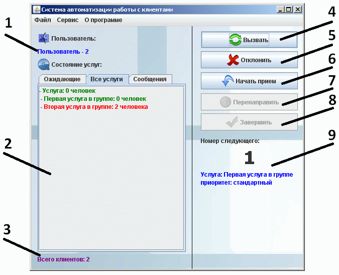
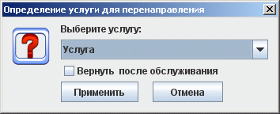

Пользовательский компонент управления системой
Внешний вид главного окна пользовательского компонента
управления системой

-
Информация о пользователе и его номере пункта
приема
-
Индикация состояния услуг пользователя. На закладке
"Ожидающие" отображаются ожидающие приема клиенты. На закладке "Все услуги"
выводится информация по всем услугам, по которым работает
пользователь. На вкладке "Сообщения" содержаться все полученные сообщения от администратора системы.
-
Индикация общего числа ожидающих клиентов
-
Кнопка вызова ожидающего клиента. При повторном нажатии на эту
кнопку произойдет повторный вызов пользователя, при этом информация об этом
попайдет на общее табло. Номер вызванного клиента отображается на табло
пользователя, его вызвавшего.
-
Кнопка отклонения клиента, на явившегося по вызову.
-
Кнопка начала приема клиента подошедшего по вызову.
-
Кнопка переадресации клиента в другую услугу. При
переадресации клиента нужно выбрать услугу, куда отправляется клиент и
возможность последующего возврата.
-
Кнопка завершения работы с клиентом.
-
Индикация номера вызываемого клиента, его приоритета и
название услуги ему требуемой.
Возможности пользователя в управлении клиентской очередью.
Управление осуществляется кнопками в правой части формы. Активны только те кнопки, действия которых может выполнить пользователь. Возможные действия:
- Вызвать следующего в очереди. При повторном нажатии на кнопку вызова будет произведен повторный вызов клиента.
- Отклонить клиента по неявке.
- Начать работу с подошедшим клиентом.
- Перенаправить клиента для осуществления другой требуемой услуги с прежним номером. По окончанию осуществления другой услуги система может вернуть клиента к прежней услуге, для этого необходимо поставить галочку при осуществлении выбора пункта назначения для клиента. При перенаправлении у клиента повышается приоритет, это обеспечивает более быстрое оказание комплексных услуг. При перенаправлении клиента в прежнюю услугу, клиент становится в конец очереди и приоритет не изменяется.
Окно переадресации:

- Завершить работу с клиентом. При завершении работы с клиентом может понадобится выбор результата с которым работа завершилась. Необходимость выбора. как и сам список для выбора, настраивается в приложении администрирования администратором системы.
Индикация состояния услуг пользователя.
Пользователь может видеть номер вызываемого клиента, его приоритет и название услуги ему требуемой. Также пользователь видит общее состояние услуг, которые он оказывает. Эта информация отражается на закладках «Ожидающие» и «Все услуги». Эта информация обновляется автоматически, при необходимости можно сделать это вручную в главном меню «Файл-Обновить состояние» либо по нажатию сочетания клавиш «Ctrl+R». Во вкладке «Сообщение» выводятся все сообщения пришедшие от администратора системы.
Горячие клавиши:
- Обновить состояние - Ctrl + R
- Завершение работы - Alt + X
- Вызвать - Ctrl + V
- Отклонить - Ctrl + O
- Начать прием - Ctrl + S
- Перенаправить - Ctrl + Q
- Завершить - Ctrl + Z
- Помощь - Ctrl + H или F1
- О программе - Ctrl + A